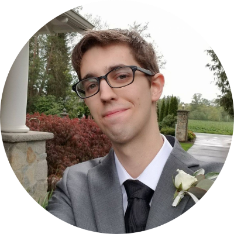

|

|
Charlie England
insert title here
|
Personal Statement:
I graduated from UW in 2015 with a degree in biology with a pre-medicine curriculum. At that time, I was planning to go into medicine. However, before I went to medical school, I wanted to take a year off in order to gather work experience and prepare for intense schooling. In order to help with those goals I started working in a medical center. Soon I was promoted to a clinic administrator, which is the position I currently have. My duties allow me to do a wide range of tasks , and I find I enjoy the diversity in my work. Since my job requires me to work closely with doctors, I was able discover more about the job. Additionally, I was able to have more close hand experience of the day to day experiences of medical providers. I decided that ultimately, being a doctor was not a good fit for me. I started to look into different alternatives. My father is a programmer, which led me to look deeper into that career path. When I was in middle school, I had taken a course on programming and had dabbled in coding since then. At this point, a whole new world opened up to me. The various fields and required knowledge were expansive, which would allow me to do anything I wanted. Best of all, I could train myself on how to code with hard work and dedication. This would allow me to discover the world of coding, to find what best suits my skillset, while avoiding dedicating myself to a 4 year degree which might not be the right fit.
While teaching myself to code, I found that I enjoyed coding. Coding allows you to experience a diversity of topics, while each project brings with it a unique problem that needs to be solved in an efficient manner. I craved the challenges each new project brought. I would often find myself working on my own personal coding projects late into the night. I was able to apply this new found knowledge to my current job. I began to automate many of my work tasks and then offer those tools to my colleagues. I also discovered that my current job was not providing enough of an intellectual challenge. I was soon seeking out tasks to automate in order to bring more difficulty and fun into my work. I found that I truly felt happy and accomplished ever time I would finish a project. This is why I was to pursue a coding further. I have researched what could help me best achieve my goal of continuing my education in coding. I have found that the coding boot camp offered by UW would best help me achieve my goals; and I would love to be a part of such a program.
Work Experience:
| Dates |
Job title |
Company |
| Jan 2018 - Present |
Administrative Specialist C |
Kaiser Permanente Washington |
| Jul 2016 - Jan 2018 |
Lead Patient Access Representative |
Kaiser Permanente Washington |
| Jun 2015 - Jul 2016 |
Research Technologist I |
University of Washington |
| Oct 2012 - Jan 2014 |
Customer Experience Manage |
Michael's Arts and Crafts |
Skills
| Python |
⭐⭐⭐⭐ |
| C# |
⭐⭐⭐⭐ |
| Painting |
⭐⭐⭐ |
| Photography |
⭐⭐⭐ |
Education
Python Programming Certificate | Univeristy of Washington, Seattle CE | April 2019-November 2019
- Unit testing
- Profiling and performance tuning
- Concurrency and asychronus programming methods
- Relational and non-relational databases
- Web protocols, including SMTP, IMAP and HTTP
- Web scraping and applying APIs
- Web frameworks: Flask and Django
Bachelor of Science in Biology | University of Washington, Bothell | 2011-2015
- GPA 3.91
- Magna Cum Laude
- Pre-Medicine Curriculum
Self Learnings / Certificates: